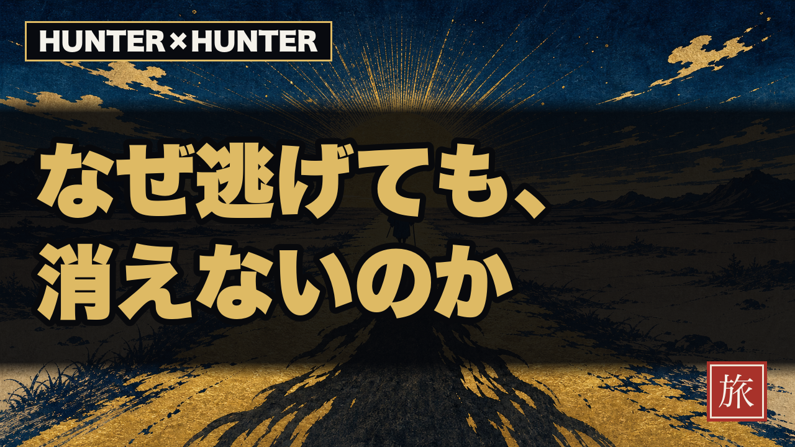
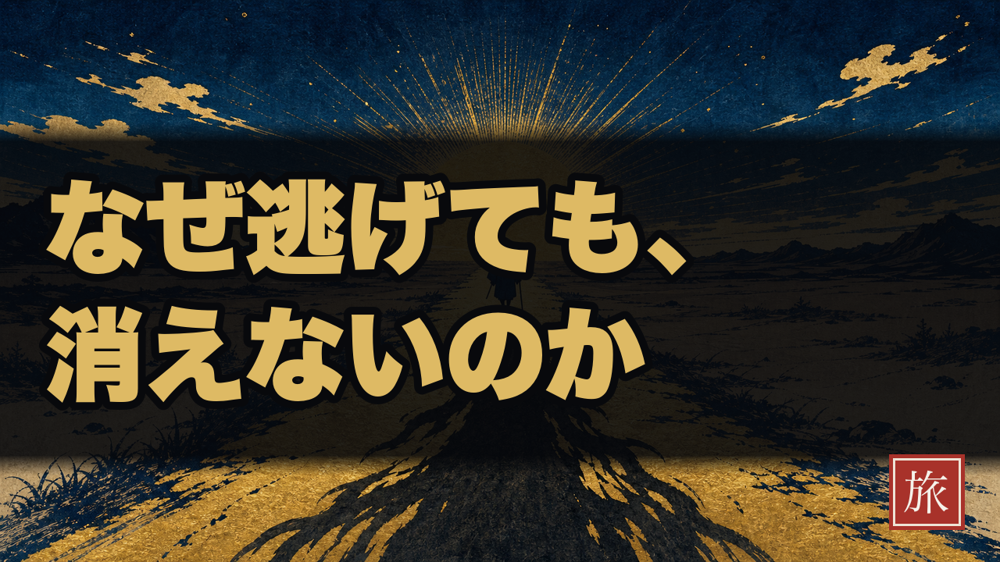
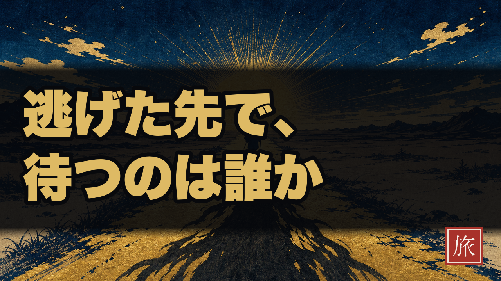

第34話 HUNTER×HUNTER × 旅 ・ サムネ最終判断
洞察型サムネ — 独立ハーネスで90点通過（作品名タグ版）
新設した洞察型ハーネス make-thumbnail-insight.py（シネマ比喩背景＋読み替えステートメント＋卦バッジ）で制作。文脈ゼロの独立採点（analytics/eval-schemas/thumbnail.json・閾値90）にかけ、作品名タグ版が90点で通過しました。背景＝夜明けの一本道・地平の旅人・手前に伸びる長い影＝ついてくる自分を専用生成した現代浮世絵。
💡 今回の発見（ハーネス整合の不具合を1つ直しました）：
採点ルーブリック
→ チャンネルの成長戦略SSOT（
採点ルーブリック
thumbnail.json は旧Tier A用で、「固有名詞が無いと curiosity_gap 減点」という基準を持ちます。純・洞察型（三井寿と同じ作品名なし）はこの基準に構造的に引っかかり80点で頭打ちでした。→ チャンネルの成長戦略SSOT（
growth-1000-strategy.md「作品名先出しが無名chの唯一効くレバー」）に沿って作品名タグを小さく載せることで、洞察が主役のまま固有名詞要件も満たし90点に。タイトルも既に「キルアは家を出ても…」と作品名先出しなので一貫します。



実寸フィード確認（360px / 180px）

独立採点の内訳（Cが最強な理由）
| 観点(配点) | C タグあり | B タグなし |
|---|---|---|
| 可読性360px(30) | 28 | 27 |
| 一点集中(20) | 16 | 16 |
| 明るさ対比(15) | 14 | 12 |
| 好奇心ギャップ(15) | 14 | 9 ※固有名詞なし |
| 約束回収(10) | 8 | 8 |
| 方針順守(10) | 10 | 8 |
| 合計 | 90 PASS | 80 |
残課題（採点者フラグ）：一点集中が最弱＝中央の放射光と題字が視線を奪い合い。次周で背景中央のコントラストを一段落とせば+数点。公開後CTRで検証します（PDCA仮説）。
👉 どうしますか？
1C(タグあり) と B(タグなし) でYouTube公式A/Bテスト（推奨）— 同背景・同コピーで「作品名タグはサムネCTRに効くか」を1変数で検証。戦略仮説を直接データ化
2C（作品名タグあり）単独で確定 — 戦略に最も忠実・ハーネス90点
3純・洞察型（B or A・作品名なし）を採用 — 三井寿実験と揃える（戦略とは外れる）
4コピー/背景/タグを直す（指示ください）
選定後：勝ち版からTikTok縦カバー生成 → 概要欄 → ショート2本（幕4刃＋冒頭Hook）→ 公開キットへ。公開は 2026-07-13 04:00 JST 予約。アップロードのボタンは必ずあなたが押します。